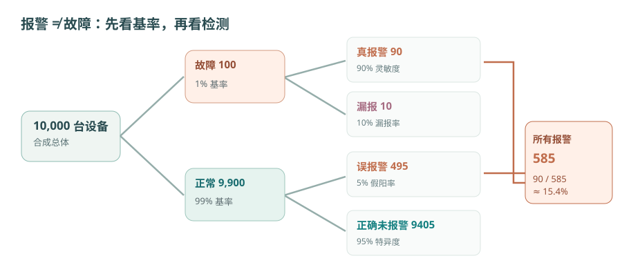

概率基础：从事件到贝叶斯更新
知道一件事发生之后，概率为何会改变？为什么“90% 能检测出故障”并不意味着“每次报警有90%的概率真的故障”？
01 · 事件是对样本空间提出问题
一次随机试验可能产生多个结果。用 Ω 表示全部可能的基本结果，事件 A 是其中一个子集；在公平骰子示例中，Ω={1,2,3,4,5,6}。概率刻画的是事件在给定模型下的可能性，而不是某次试验的确定结果。
对有限、等可能的基本结果，古典概率就是“有利结果数 / 总结果数”。但对不等可能结果，不能仅数个数，必须逐项加上真实概率。频率派研究可重复试验的长期表现；主观贝叶斯解释关注在给定信息下的信念概率，二者都遵守概率公理。

02 · 概率加法和补集规则
一个事件不发生记为 A 的补集 Aᶜ，因此 P(Aᶜ)=1−P(A)。两个事件至少一个发生，使用并集 A∪B；若两事件可能同时发生，直接相加会把交集重复计数一次。
例如在骰子上定义 A={5,6}、B={2,4,6}，则 P(A)=2/6，P(B)=3/6，交集仅 {6}，故 P(A∪B)=2/6+3/6−1/6=4/6。
03 · 条件概率：分母已经改变
“在 B 已发生时 A 的概率”不是将 P(A) 随意乘一个系数，而是把概率空间限制到 B上重新归一化（前提 P(B)>0）。

乘法法则可由条件定义得到 P(A∩B)=P(A|B)P(B)。独立性意味着 P(A|B)=P(A)（P(B)>0 时），互斥不等于独立；两个正概率且互斥的事件必然不独立。
04 · 贝叶斯公式：重新看待报警的含义
考虑一个完全虚构的设备故障报警系统：10,000 台设备中假设 1% 真实故障，检测系统对故障设备有 90% 报警率，对正常设备有 5% 误报率。实际故障设备100台，真报警90台；正常设备9900台，误报警495台。

在式中 D 表示真实故障、+ 表示报警，Dᶜ 表示正常；先验P(D)=0.01，似然P(+|D)=0.90，误报率P(+|Dᶜ)=0.05。代入得 P(D|+)=0.009/(0.009+0.0495)=0.153846...。这并不是检测系统“只有15.4%灵敏度”，而是低基率下的阳性预测值。
必要的假设
这个数值依赖于目标群体故障基率恰为1%、设备独立按相同误差机制检测、分类标签准确。若应用场景或基率改变，后验也改变；不能把合成数值直接迁移到真实工程系统。
05 · 随机变量与概率质量函数
把骰子映射成 X=1（掷出偶数），X=0（掷出奇数）。这是一个离散随机变量，其概率质量函数 p(0)=p(1)=0.5。概率质量函数必须非负，且所有取值的概率和为 1。期望 E[X] 是对未来长期数值结果的加权平均，而不是下一次必定观察到的结果。
这里 E[X]=0×0.5+1×0.5=0.5。反之，如果研究连续量（例如真正连续的等待时间），单一点的概率在常见连续分布中为 0，应使用区间概率而非点质量。
06 · 改变基率，观察后验为何变化
设备报警后的真实故障比例
真报警90次，误报警495次；在报警中真正故障约15.38%
样本总数仍为10,000台；固定故障召回率90%、误报率5%。
n = 10_000
base_rate, sensitivity, false_positive = 0.01, 0.90, 0.05
fault = n * base_rate
true_alerts = fault * sensitivity
false_alerts = (n - fault) * false_positive
posterior = true_alerts / (true_alerts + false_alerts)
print(true_alerts, false_alerts) # 90.0 495.0
print(round(posterior, 6)) # 0.153846自我检查
问题：如果检测系统误报率降为 0，且对故障有正的报警概率，报警后的故障概率是多少？
答案：在模型成立且确实出现报警的条件下，等于 1，因为所有报警均来自真实故障；但这不意味着没有漏报。
07 · 参考资料
- OpenStax · Two Basic Rules of Probability，条件概率、加法与乘法。
- Stanford STATS 60 · Conditioning，贝叶斯反向条件与基率。
- OpenIntro Statistics · Probability Chapter，事件与随机变量。
此处设备数量、故障率和报警率均为示例假设，不代表任何产品性能。